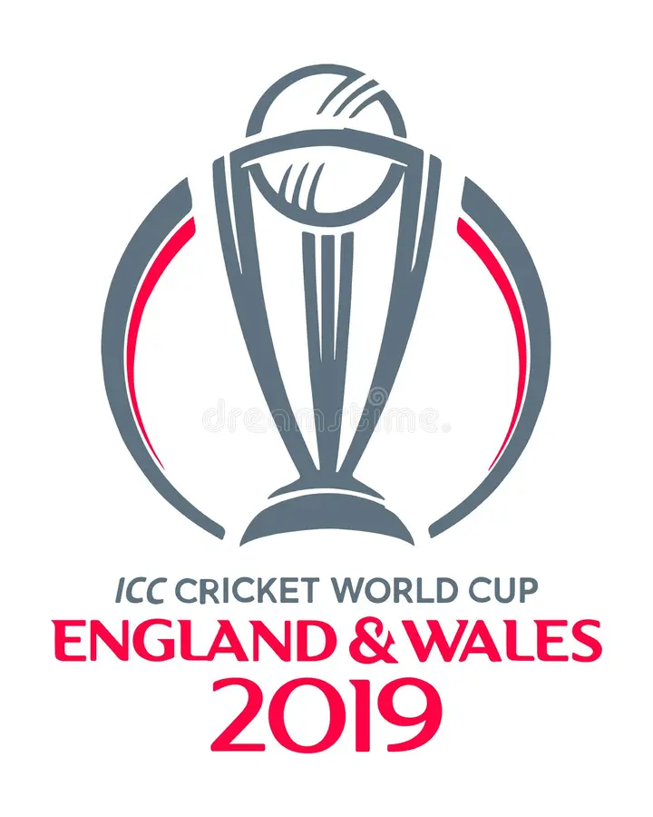
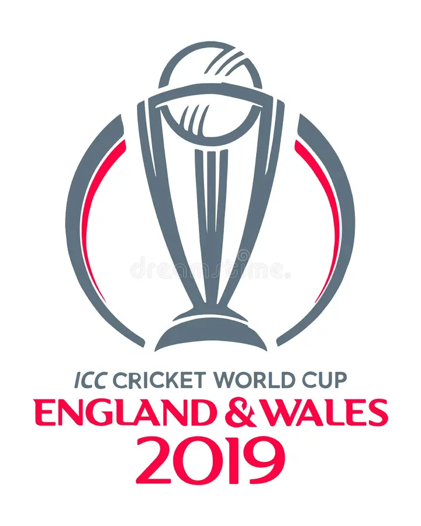
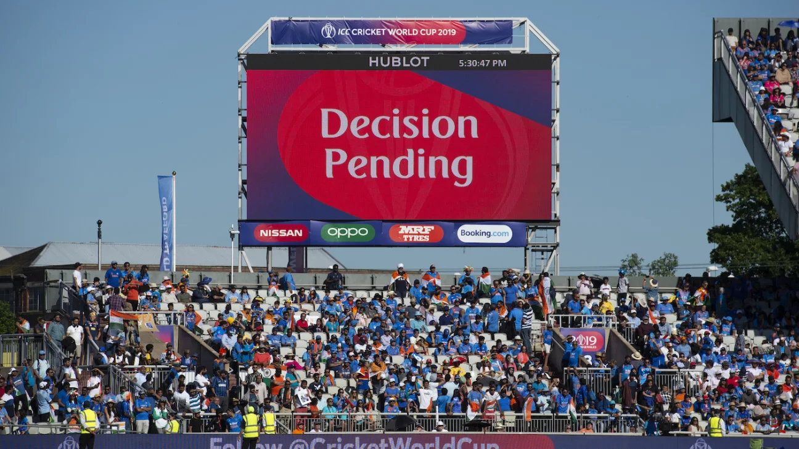
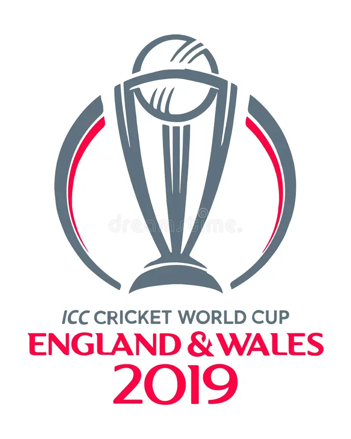
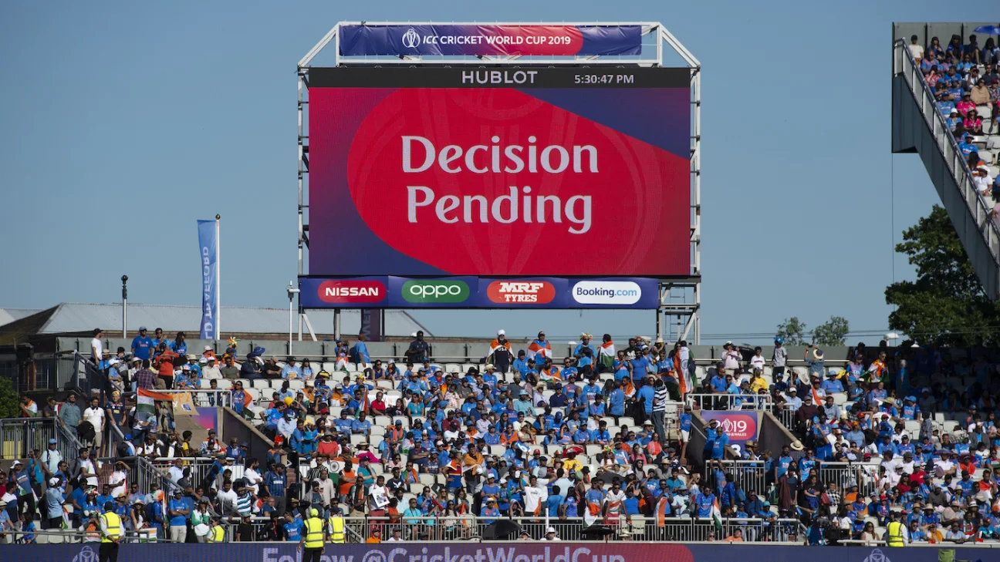

🏏 Ultra DRS Broadcast
Experience the Decision Review System in full style with cinematic visuals and a real-match feel.
📸 Featured Snapshot


Experience the Decision Review System in full style with cinematic visuals and a real-match feel.
📸 Featured Snapshot
